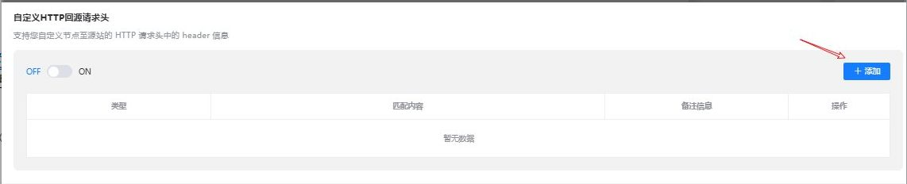
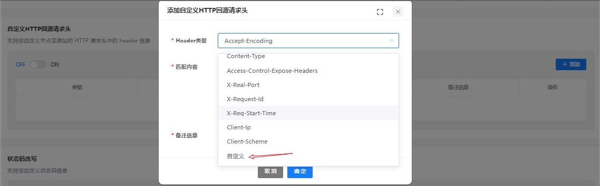

本文章介绍以下几种不同类型的Web应用服务器（包含Nginx、Tomcat、Apache、IIS 6和IIS 7）如何获取客户端的真实IP，和cdn上如何协同配置。
前言~~
网站接入CDN加速后，源站服务器端从IP请求头获取到用户访问IP不是客户端的真实IP。当您业务需要获取客户端真实IP时，可以通过配置网站服务器获取用户真实IP。
代理服务器（CDN）会把用户的HTTPWebSocket、WSS请求转到下一环节的服务器时，会在头部中加入一条“X-Forwarded-For”记录，用来记录用户的真实IP，其格式为“X-Forwarded-For：用户真实IP，代理服务器IP 1，代理服务器IP 2....
因此，您可以通过获取“X-Forwarded-For”对应的第一个IP来得到用户端的真实IP。
1：Nginx如何在访问日志中获取客户端真实IP
如果您的源站部署了Nginx反向代理，可通过在Nginx反向代理配置Location信息，后端Web服务器即可通过类似函数获取客户的真实IP地址。
根据源站Nginx反向代理的配置，在Nginx反向代理的相应location位置配置如下内容，获取客户IP的信息。
Location ^ /<uri> {
proxy_pass ....;
proxy_set_header X-Forwarded-For $proxy_add_x_forwarded_for;
}
后端Web服务器通过类似函数获取客户的真实IP。
request.getAttribute("X-Forwarded-For")
2: Tomcat如何在访问日志中获取客户端真实IP
如果您的源站部署了Tomcat服务器，可通过启用Tomcat的X-Forwarded-For功能，获取客户端的真实IP地址。
打开“server.xml”文件（“tomcat/conf/server.xml”），AccessLogValve日志记录功能部分内容如下：
<Host name="localhost" appBase="webapps" unpackWARs="true" autoDeploy="true">
<Valve className="org.apache.catalina.valves.AccessLogValve" directory="logs"
prefix="localhost_access_log." suffix=".txt"
pattern="%h %l %u %t "%r" %s %b"/>
在pattern中增加“%{X-Forwarded-For}i”，修改后的xml为：
<Host name="localhost" appBase="webapps" unpackWARs="true" autoDeploy="true">
<Valve className="org.apache.catalina.valves.AccessLogValve" directory="logs"
prefix="localhost_access_log." suffix=".txt"
pattern="%{X-Forwarded-For}i %h %l %u %t "%r" %s %b" />
</Host>
查看“localhost_access_log”日志文件，可获取X-Forwarded-For对应的访问者真实IP。
3: Apache如何在访问日志中获取客户端真实IP
如果您的源站部署了Apache服务器，可通过运行命令安装Apache的第三方模块mod_rpaf，并修改“http.conf”文件获取客户IP地址。
执行以下命令安装Apache的第三方模块mod_rpaf。
wget https://github.com/gnif/mod_rpaf/archive/v0.6.0.tar.gz
tar xvfz mod_rpaf-0.6.tar.gz
cd mod_rpaf-0.6
/usr/local/apache/bin/apxs -i -c -n mod_rpaf-2.0.so mod_rpaf-2.0.c
打开“httpd.conf”配置文件，并将文件内容修改为如下内容：
LoadModule rpaf_module modules/mod_rpaf-2.0.so ##加载mod_rpaf模块
<IfModule mod_rpaf.c>
RPAFenable On
RPAFsethostname On
RPAFproxy_ips 127.0.0.1 <反向代理IPs>
RPAFheader X-Forwarded-For
</IfModule>
定义日志格式。
LogFormat "%{X-Forwarded-For}i %l %u %t \"%r\" %>s %b \"%{Referer}i\" \"%{User-Agent}i\"" common
启用自定义格式日志。
CustomLog "/[apache目录]/logs/$access.log" common
重启Apache，使配置生效。
/[apached目录]/httpd/bin/apachectl restart
查看“access.log”日志文件，可获取X-Forwarded-For对应的客户端真实IP。
4: IIS 6如何在访问日志中获取客户端真实IP
如果您的源站部署了IIS6服务器，您可以通过安装“F5XForwardedFor.dll”插件，从IIS 6的访问日志中获取客户端真实的IP地址。
下载F5XForwardedFor模块。
根据您服务器的操作系统版本将“x86\Release”或者“x64\Release”目录中的“F5XForwardedFor.dll”文件拷贝至指定目录（例如，“C:\ISAPIFilters”），同时确保IIS进程对该目录有读取权限。
打开IIS管理器，找到当前开启的网站，在该网站上右键选择“属性”，打开“属性”页面。
在“属性”页面，切换至“ISAPI筛选器”，单击“添加”，在弹出的窗口中，配置如下信息
“筛选器名称”：“F5XForwardedFor”；
“可执行文件”：“F5XForwardedFor.dll”的完整路径，例如：“C:\ISAPIFilters\F5XForwardedFor.dll”
单击“确定”，重启IIS 6服务器。
查看IIS 6服务器记录的访问日志（默认的日志路径为：“C:\WINDOWS\system32\LogFiles\ ”，IIS日志的文件名称以“.log”为后缀），可获取X-Forwarded-For对应的客户端真实IP。
5: IIS 7如何在访问日志中获取客户端真实IP
如果您的源站部署了IIS 7服务器，您可以通过安装“F5XForwardedFor”模块，从IIS 7的访问日志中获取客户端真实的IP地址。
下载F5XForwardedFor模块。
根据服务器的操作系统版本将“x86\Release”或者“x64\Release”目录中的“F5XFFHttpModule.dll”和“F5XFFHttpModule.ini”文件拷贝到指定目录（例如，“C:\x_forwarded_for\x86”或“C:\x_forwarded_for\x64”），并确保IIS进程对该目录有读取权限。
在IIS服务器的选择项中，双击“模块”，进入“模块”界面。
单击“配置本机模块”，在弹出的对话框中，单击“注册”。
在弹出的对话框中，按操作系统注册已下载的DLL文件后，单击“确定”。
x86操作系统：注册模块“x_forwarded_for_x86”
名称：x_forwarded_for_x86
路径：“C:\x_forwarded_for\x86\F5XFFHttpModule.dll”
x64操作系统：注册模块“x_forwarded_for_x64”
名称：x_forwarded_for_x64
路径：“C:\x_forwarded_for\x64\F5XFFHttpModule.dll”
注册完成后，勾选新注册的模块（“x_forwarded_for_x86”或“x_forwarded_for_x64”）并单击“确定”。
在“ISAPI和CGI限制”中，按操作系统添加已注册的DLL文件，并将其“限制”改为“允许”。
x86操作系统：
ISAPI或CGI路径：“C:\x_forwarded_for\x86\F5XFFHttpModule.dll”
x64操作系统：
ISAPI或CGI路径：“C:\x_forwarded_for\x64\F5XFFHttpModule.dll”
重启IIS 7服务器，等待配置生效。
查看IIS 7服务器记录的访问日志（默认的日志路径为：“C:\WINDOWS\system32\LogFiles\ ”，IIS日志的文件名称以“.log”为后缀），可获取X-Forwarded-For对应的客户端真实IP。
6 CDN上如何协同配置
如你源上配置好“X-Forwarded-For”后 登录多途官网 https://www.duotu.com 我们域名 进入站点管理 高级配置 下拉到自定义HTTP回源请求头 （支持您自定义节点至源站的 HTTP 请求头中的 header 信息）
如图所示：

heaader类型 匹配内容 备注信息。根据源上同步配置即可获取客户端真实IP
 |